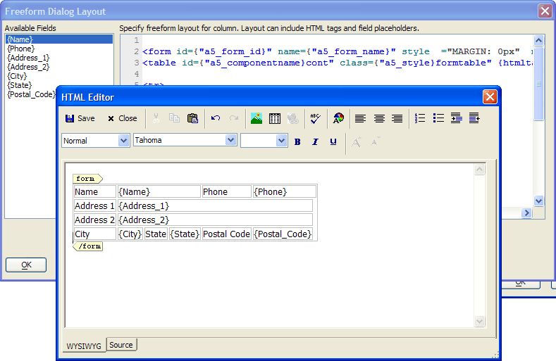

Creating a Freeform Dialog Layout
This example shows a freeform dialog layout. A freeform layout allows you to position controls and buttons at any location on the dialog form.

To create a freeform dialog layout:
Display the Form > Properties page of the Dialog Component Builder.
Set Layout Options > Use Free-form layout to TRUE (checked).
Click
 in the Layout Options > Free-Form Layout
Definition property to display the Freeform
Dialog Layout dialog.
in the Layout Options > Free-Form Layout
Definition property to display the Freeform
Dialog Layout dialog.Optionally, click HTML Editor to display the HTML Editor.
Edit the HTML of the layout.
Note that you can use the Freeform Dialog Layout dialog to place controls into the template. Position the cursor in the HTML and double click any field in the Available Fields list to insert it at the cursor location.
Click Save in the HTML Editor to return to the Freeform Column Layout dialog.
Click OK in the Freeform Column Layout dialog to return to the Dialog Component Builder.
Limitations
Web publishing applications only; not for Ajax dialogs.
See Also